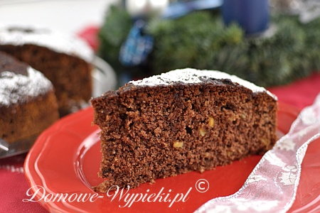

Podchmielony Szkot

Opis
Mocno aromatyczne ciasto świąteczne z kawałkami kandyzowanej skórki pomarańczowej, czekolady i z przyprawą korzenną. Ciasto jest miękkie, wilgotne i podchmielone. Jest mocno nasączone whisky, dzięki której jest jeszcze bardziej aromatyczne i wilgotniejsze. Po upieczeniu i nasączeniu alkoholem należy ciasto zawinąć szczelnie i pozostawić do dnia następnego, aby przeszło smakiem. Jeszcze lepiej smakuje kilka dni po upieczeniu, a swoją świeżość zachowuje do tygodnia. Dlaczego Szkot? Może chodzi o whisky (szkocką), która jest użyta do ciasta? ;)
Składniki
- 250g masła lub margaryny
- 250g cukru
- 2 łyżeczki cukru waniliowego
- 100g kandyzowanej skórki pomarańczowej
- 4 jajka
- 1 łyżeczka przyprawy do piernika (kupnej lub domowej)
- szczypta soli
- 325g mąki pszennej
- 2 płaskie łyżeczki proszku do pieczenia
- 2 łyżki kakao
- 200g zmielonych migdałów
- 100g posiekanej lub startej na tarce czekolady (u mnie gorzka)
- 8 łyżek whisky
- 2 łyżki cukru waniliowego
- 2 łyżki cukru
- 1 łyżka kawy rozpuszczalnej
Sposób przygotowania
-
Skórkę pomarańczową posiekać drobno. Odstawić na bok.
-
Miękkie masło (margarynę) utrzeć z cukrem, cukrem waniliowym i szczyptą soli na puszystą masę. Dalej miksując dodawać po jednym jajku.
-
Osobno w miseczce wymieszać przyprawę do piernika, mąkę, proszek do pieczenia, kakao, zmielone migdały, posiekaną czekoladę i skórkę pomarańczową.
-
Do utartej masy jajecznej dodać stopniowo suche składniki z miski. Mieszać krótko, tylko do połączenia składników. (Ciasto będzie dość gęste).
-
Ciasto przełożyć do tortownicy o średnicy 26cm wysmarowanej margaryną i posypanej bułką tartą.
-
Piec w nagrzanym piekarniku ok. 60 minut w temperaturze 180°C. (Ciasto sprawdzić patyczkiem. Ja piekłam je 70 minut). Ciasto pozostawić do ostygnięcia.
-
Whisky, cukier waniliowy, cukier i kawę podgrzać w garnku. Mieszać, aby składniki się rozpuściły.
-
Ciasto ponakłuwać patyczkiem do szaszłyków lub wykałaczką. Polać ciepłą whisky, zawinąć szczelnie w folię aluminiową i pozostawić do następnego dnia.
-
Przed podaniem posypać cukrem pudrem.